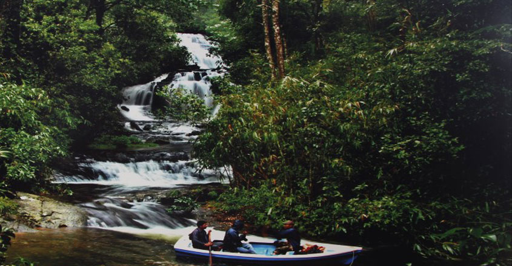

The Pilgrim Capital of Kerala
Pathanamthitta is a municipality situated in the Central Travancore region in the state of Kerala, India, spread over an area of 23.50 km2. It is the administrative capital of Pathanamthitta district. The town has a population of 37,538. The Hindu pilgrim centre Sabarimala is situated in the Pathanamthitta district; as the main transport hub to Sabarimala, the town is known as the 'Pilgrim Capital of Kerala'.
Top Destinations

Perunthenaruvi Waterfall
A natural waterfall with captivating surroundings is situated on the banks of the River Pamba. The fall is 60 to 100 ft deep which pours down on a rocky bed. The place is a favourite picnic spot among locals as well as tourists.

Gavi
One of the most beautiful places in India, Gavi is a small village tucked between tea estates and wide and dense forests. A unique project in itself, the place is a model of eco-tourism site bringing to the world its spellbinding abundance in flora and fauna.

Konni and Adavi
A hill town, Konni is famous for timber trade and wild elephant training centre. This is a charming town with lush meadows and hills stands on the bank of river Achakovil. It is surrounded by clove and pepper plantations. Elephants trapped from the forest area are also tamed here.

Sabarimala
Sabarimala is situated 72 km from Pathanamthitta town, 191 km from Thiruvananthapuram and 210 km from Kochi.

Aranmula
At a distance of 15 Km from Pathanamthitta, 53 Km from Alappuzha & 57 Km from Kumarakom, Aranmula is a Aranmula Snake Boat Race, also known as Aranmula Vallamkali is a popular boat race held in the never ending Kerala Backwaters.

Kakki Reservoir
At a distance of 70 Kms from Pathanamthitta, Kakki Reservoir is a scenic dam built across Pamba River. The reservoir is surrounded by valleys and forest of great natural beauty.
Thrikkakkudi Rock-Cut Temple - Kaviyoor
At a distance of 6 Kms from Pathanamthitta, Manjinikkara Church, also known as St. Stephen's Church is situated on a hillock near Omallur.
Manjinikkara Church
At a distance of 6 Kms from Pathanamthitta, Manjinikkara Church, also known as St. Stephen's Church is situated on a hillock near Omallur.

Nilackal
At a distance of 40 Kms from Pathanamthitta, Nilackal, located on Pathanamthitta - Pampa route, on the way to Sabarimala is famous for Mahadeva Temple and Marthoma Sleeha Church.
Parumala Church
At a distance of 35 Kms from Pathanamthitta & 10 Kms from Chengannur, Parumala Church located on a small island on the banks of Pampa River near Mannar, close to SH6 (12 Kms from Thiruvalla). The church is known as St. Peters and St. Paul's Orthodox Church.